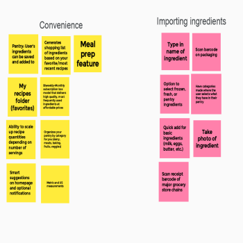
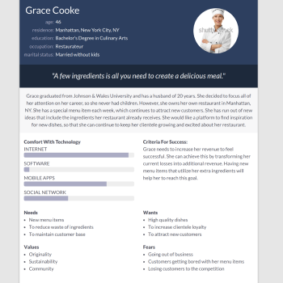
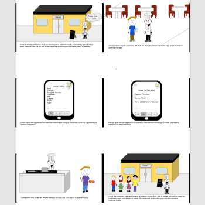
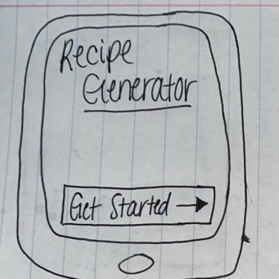
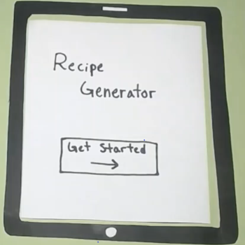
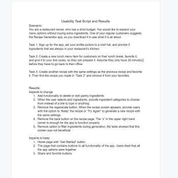
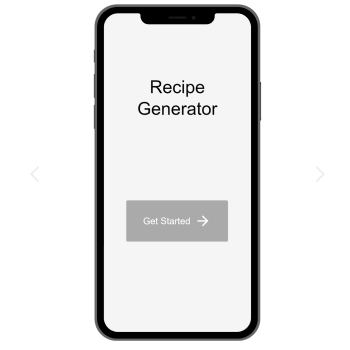
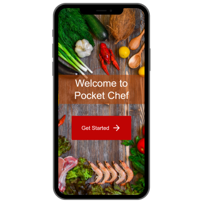

Problem Statement: Recipe Generator

Users struggle to find recipes they can make with the ingredients they already have, forcing them to spend extra money on food expenses, or eat the same meals. Our solution provides users with practical recipes that only use ingredients they already have.
Affinity Diagram: Recipe Generator
My group and I brainstormed about the most important features and functions for our recipe generator from a user's perspective.
Personas: 4 Personas for Recipe Generator App
Each group member created a persona of someone who embodies the characteristics of our target audience.
Storyboards: 4 Storyboards for Recipe Generator App
Each group member developed a storyboard centered around the persona they created to demonstrate the need for our app.
Sketches: 10 Sketches for Recipe Generator App
My group and I sketched multiple, potential app designs. Each app design proposes a solution to our Problem Statement.
Paper Prototype: Recipe Generator App
A paper prototype to display the potential fuctionality of my group's app.
Usability Testing: Recipe Generator
A scenario and three tasks used for usability testing, as well as app changes to implement, and aspects to keep based on the test results.
Low-Fi Prototype: Recipe Generator
My group and I delevoped a low-fidelity prototype for our Recipe Generator app.
Hi-Fi Prototype: Recipe Generator
My group and I enhanced our previous prototype to create this hi-fidelity one, which represents how we would like our final product to look.